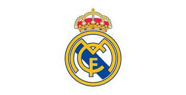

|
النوع: نادي التصنيف: أساسي الرياضة: كرة القدم تاريخ التأسيس: 1902 |
 |
ريال مدريد (بالإسبانية: Real Madrid Club de Fútbol، وتعني فريق مدريد الملكي لكرة القدم) هو فريق كرة قدم محترف إسباني أُسس عام 1 902، مقره العاصمة الإسبانية مدريد. يلعب الفريق في الدوري الإسباني واختير كأفضل فريق كرة قدم في القرن العشرين، وقد فاز بالدوري الإسباني 34 مرة (رق م قياسي)، وتسعة عشر مرة بكأس ملك إسبانيا وأحرز رقمًا قياسيًا بحيازته 13 بطولة في دوري أبطال أوروبا. وهو أيضا أحد أعضاء جي–14 للأندية القيادية في أوروبا التي تم إلغاؤها حاليًا واستبدلت بـرابطة الأندية الأوروبية. ظهر النادي بقوة على ساحة كرة القدم الأوروبية والإسبانية خلال عقد الخمسينيات من القرن العشرين ، وبحلول عقد الثمانينيات من القرن سالف الذكر كان هذا النادي يتمتع بإحدى أفضل الفرق الرياضية في أوروبا ، المعروفة باسم "خماسي النسر" (بالإسبانية: Quinta del Buitre)، الذي فاز بدوري أوروبا – كأس الاتحاد الأورو بي آنذاك – مرتين متتاليتين، وخمس بطولات إسبانية، وكأس إسبانيا مرة واحدة، وثلاثة كؤوس سوبر إسبانية. يُعد واحدًا من ثلاثة أندية إسبانية لم يسبق لها أن هبطت من قمة كرة القدم الإسبا نية، إلى جانب أتلتيك بيلباو وبرشلونة، كما أنه أحد أوسع النوادي من حيث القاعدة الشعبية حول العالم. ويشتهر النادي كذلك بمنافسته طويلة الأمد مع ناديا برشلونة وأتلتيكو مدريد، حيث تعرف المنافسة الأولى باسم الكلاسيكو (بالإسبانية: El Clásico)، والثانية باسم ديربي مدريد (بالإسبانية: El Derbi madrileño). |